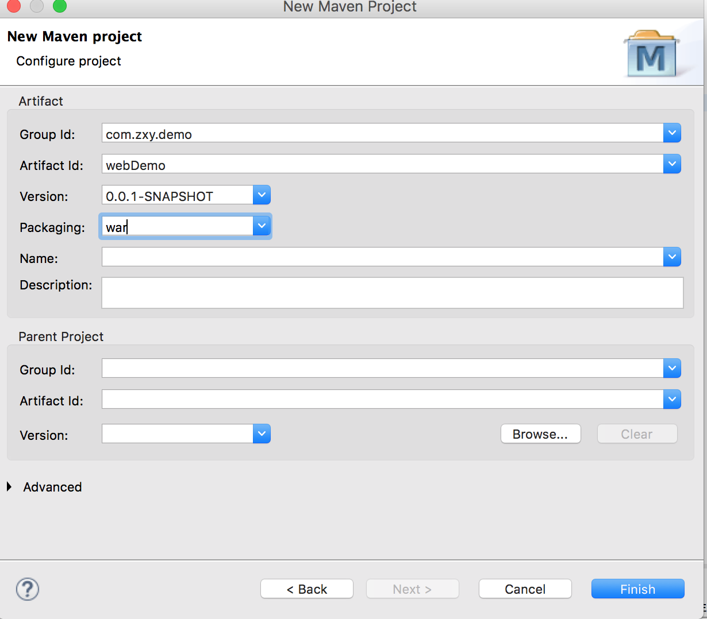
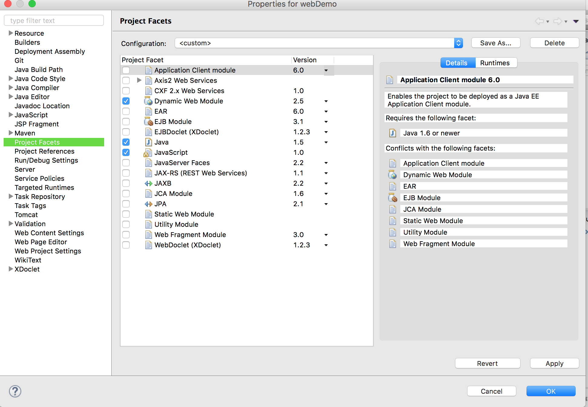
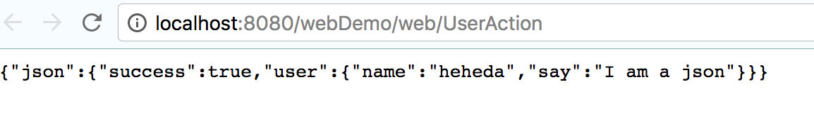
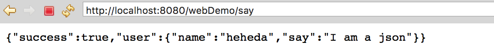

配置文件方式
- 在eclipse中创建一个maven项目：
- 打包方式选择 war

- 勾选动态web项目

- 添加依赖(pom.xml)
|
|
- 在web.xml中添加struts2拦截器
|
|
- 新建bean
- 新建 com.zxy.demo.bean 包
- 新建 User 类
|
|
创建Action
- 新建com.zxy.demo.action包
- 新建 ActionDemo 类继承 ActionSupport12345678910111213141516171819202122232425262728293031323334353637package com.zxy.demo.action;import java.util.HashMap;import java.util.Map;import com.opensymphony.xwork2.ActionSupport;import com.zxy.demo.bean.User;public class ActionDemo extends ActionSupport {private static final long serialVersionUID = 1L;public Map<String, Object> json;public ActionDemo() {json = new HashMap<String, Object>();}public String say () {User user = new User();user.setName("heheda");user.setSay("I am a json");json.put("user", user);json.put("success", true);return SUCCESS;}public Map<String, Object> getJson() {return json;}public void setJson(Map<String, Object> json) {this.json = json;}}
在 com/main/resources 新建 struts.xml
|
|
- 使用 tomcat 运行项目
访问 http://localhost:8080/webDemo/web/UserAction

注解方式
- 干掉 struts.xml
- 在Action中添加注释
|
|
